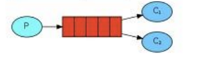

# RabbitMQ
# 概念
RabbitMQ 是一个消息中间件：它接受并转发消息。你可以把它当做一个快递站点，当你要发送一个包裹时，你把你的包裹放到快递站，快递员最终会把你的快递送到收件人那里，按照这种逻辑 RabbitMQ 是一个快递站，一个快递员帮你传递快件 RabbitMQ 与快递站的主要区别在于，它不处理快件而是接收，存储和转发消息数据。
# 四大核心概念
# 生产者
产生数据发送消息的程序是生产者
# 交换机
交换机是 RabbitMQ 非常重要的一个部件，一方面它接收来自生产者的消息，另一方面它将消息推送到队列中。交换机必须确切知道如何处理它接收到的消息，是将这些消息推送到特定队列还是推送到多个队列，亦或者是把消息丢弃，这个得有交换机类型决定。
# 队列
队列是 RabbitMQ 内部使用的一种数据结构，尽管消息流经 RabbitMQ 和应用程序，但它们只能存储在队列中。队列仅受主机的内存和磁盘限制的约束，本质上是一个大的消息缓冲区。许多生产者可以将消息发送到一个队列，许多消费者可以尝试从一个队列接收数据。这就是我们使用队列的方式
# 消费者
消费与接收具有相似的含义。消费者大多时候是一个等待接收消息的程序。请注意生产者，消费者和消息中间件很多时候并不在同一机器上。同一个应用程序既可以是生产者又是可以是消费者。
# RabbitMQ 核心部分
工作模式
# Docker 安装 rabbitmq
安装延迟队列插件
下载插件网址：https://www.rabbitmq.com/community-plugins.html
创建 DOckerFile 文件
FROM rabbitmq:3.8.8-management | |
COPY ./plugins/rabbitmq_delayed_message_exchange-3.8.9.ez plugins/ | |
RUN rabbitmq-plugins enable --offline rabbitmq_mqtt rabbitmq_federation_management rabbitmq_stomp rabbitmq_delayed_message_exchange |
创建 docker-compose.yml 配置文件
version: '3' | |
services: | |
rabbitmq_service: | |
restart: 'always' | |
#build: ./Dockerfile | |
image: rabbitmq:test | |
container_name: rabbitmq | |
ports: | |
- "15672:15672" | |
- "5672:5672" | |
volumes: | |
- ./data/:/var/lib/rabbitmq | |
- ./plugins/:/plugins |
启动即可
# 消息应答
# 概念
消费者完成一个任务可能需要一段时间，如果其中一个消费者处理一个长的任务并仅只完成了部分突然它挂掉了，会发生什么情况。RabbitMQ 一旦向消费者传递了一条消息，便立即将该消息标记为删除。在这种情况下，突然有个消费者挂掉了，我们将丢失正在处理的消息。以及后续发送给该消费这的消息，因为它无法接收到。
为了保证消息在发送过程中不丢失，rabbitmq 引入消息应答机制，消息应答就是：消费者在接收到消息并且处理该消息之后，告诉 rabbitmq 它已经处理了，rabbitmq 可以把该消息删除了。
# 自动应答
消息发送后立即被认为已经传送成功，这种模式需要在高吞吐量和数据传输安全性方面做权衡，因为这种模式如果消息在接收到之前，消费者那边出现连接或者 channel 关闭，那么消息就丢失了，当然另一方面这种模式消费者那边可以传递过载的消息，没有对传递的消息数量进行限制，当然这样有可能使得消费者这边由于接收太多还来不及处理的消息，导致这些消息的积压，最终使得内存耗尽，最终这些消费者线程被操作系统杀死，所以这种模式仅适用在消费者可以高效并以某种速率能够处理这些消息的情况下使用。
# 消息手动应答
应答的方法有
A. Channel.basicAck (用于肯定确认)
RabbitMQ 已知道该消息并且成功的处理消息，可以将其丢弃了
B. Channel.basicNack (用于否定确认)
C. Channel.basicReject (用于否定确认)
与 Channel.basicNack 相比少一个参数
不处理该消息了直接拒绝，可以将其丢弃了
# Multiple 的解释
手动应答的好处是可以批量应答并且减少网络拥堵

multiple 的 true 和 false 代表不同意思
true 代表批量应答 channel 上未应答的消息
比如说 channel 上有传送 tag 的消息 5,6,7,8 当前 tag 是 8 那么此时 5-8 的这些还未应答的消息都会被确认收到消息应答
false 同上面相比
只会应答 tag=8 的消息 5,6,7 这三个消息依然不会被确认收到消息应答
# 消息自动重新入队
如果消费者由于某些原因失去连接 (其通道已关闭，连接已关闭或 TCP 连接丢失)，导致消息未发送 ACK 确认，RabbitMQ 将了解到消息未完全处理，并将对其重新排队。如果此时其他消费者可以处理，它将很快将其重新分发给另一个消费者。这样，即使某个消费者偶尔死亡，也可以确保不会丢失任何消息。
# 自动应答代码实现
生产者
package one; | |
import com.rabbitmq.client.Channel; | |
import java.nio.charset.StandardCharsets; | |
import java.util.Scanner; | |
public class Task { | |
public static void main(String[] args) throws Exception { | |
final String QUEUE_NAME = "ask_queue"; | |
Channel channel = RabbitMQUtil.getChannel(); | |
channel.queueDeclare(QUEUE_NAME, false, false, false, null); | |
Scanner scanner = new Scanner(System.in); | |
System.out.println("请输入信息"); | |
while (scanner.hasNext()) { | |
String message = scanner.nextLine(); | |
channel.basicPublish("", QUEUE_NAME, null, message.getBytes(StandardCharsets.UTF_8)); | |
System.out.println("生产者发出消息" + message); | |
} | |
} | |
} |
消费者
package one; | |
import com.rabbitmq.client.Channel; | |
public class Work01 { | |
public static void main(String[] args) throws Exception { | |
Channel channel = RabbitMQUtil.getChannel(); | |
final String QUEUE_NAME = "ask_queue"; | |
//false 设置手动应答 | |
channel.basicConsume(QUEUE_NAME, false, | |
(tag, delivery) -> { | |
try { | |
Thread.sleep(1000); | |
} catch (InterruptedException e) { | |
throw new RuntimeException(e); | |
} | |
System.out.println("work1消费消息"); | |
String s = new String(delivery.getBody()); | |
System.out.println(s); | |
// 消息处理完，手动应答，第一个参数为消息唯一标识，第二个参数为 Multiple 批量应答（推荐 false） | |
channel.basicAck(delivery.getEnvelope().getDeliveryTag(), false); | |
}, | |
consumerTag -> { | |
System.out.println(consumerTag + "消费消息中断了"); | |
}); | |
} | |
} |
# 工作模式
# 简单模式

JAVA 实现
- 添加依赖
<?xml version="1.0" encoding="UTF-8"?><project xmlns="http://maven.apache.org/POM/4.0.0"xmlns:xsi="http://www.w3.org/2001/XMLSchema-instance"
xsi:schemaLocation="http://maven.apache.org/POM/4.0.0 http://maven.apache.org/xsd/maven-4.0.0.xsd">
<parent><artifactId>rabbitmq</artifactId>
<groupId>org.example</groupId>
<version>1.0-SNAPSHOT</version>
</parent><modelVersion>4.0.0</modelVersion>
<artifactId>simple</artifactId>
<properties><maven.compiler.source>11</maven.compiler.source>
<maven.compiler.target>11</maven.compiler.target>
</properties><!-- 指定 jdk 编译版本 --><build><plugins><plugin><groupId>org.apache.maven.plugins</groupId>
<artifactId>maven-compiler-plugin</artifactId>
<configuration><source>11</source>
<target>11</target>
</configuration></plugin></plugins></build><dependencies><!--rabbitmq 依赖客户端 --><dependency><groupId>com.rabbitmq</groupId>
<artifactId>amqp-client</artifactId>
<version>5.8.0</version>
</dependency><!-- 操作文件流的一个依赖 --><dependency><groupId>commons-io</groupId>
<artifactId>commons-io</artifactId>
<version>2.6</version>
</dependency></dependencies></project> - 生产者
import com.rabbitmq.client.Channel;
import com.rabbitmq.client.Connection;
import com.rabbitmq.client.ConnectionFactory;
import java.io.IOException;
import java.nio.charset.StandardCharsets;
import java.util.concurrent.TimeoutException;
public class Producter {
private static final String QUEUE_NAME = "hello";
public static void main(String[] args) throws IOException, TimeoutException {
// 创建一个连接工厂ConnectionFactory connectionFactory = new ConnectionFactory();
connectionFactory.setHost("localhost");
connectionFactory.setUsername("admin");
connectionFactory.setPassword("admin123");
try (Connection connection = connectionFactory.newConnection(); Channel channel = connection.createChannel()) {
/*** 生成一个队列
* 1. 队列名称
* 2. 队列里面的消息是否持久化 默认消息存储在内存中
* 3. 该队列是否只供一个消费者进行消费 是否进行共享 true 可以多个消费者消费
* 4. 是否自动删除 最后一个消费者端开连接以后 该队列是否自动删除 true 自动删除
* 5. 其他参数
*/
channel.queueDeclare(QUEUE_NAME, false, false, false, null);
String message = "hello world";
/*** 发送一个消息
* 1. 发送到那个交换机
* 2. 路由的 key 是哪个
* 3. 其他的参数信息
* 4. 发送消息的消息体
*/
channel.basicPublish("", QUEUE_NAME, null, message.getBytes());
System.out.println("消息发送完毕");
}}} - 消费者
import com.rabbitmq.client.*;
public class Consumer {
private static final String QUEUE_NAME = "hello";
public static void main(String[] args) throws Exception {
ConnectionFactory connectionFactory = new ConnectionFactory();
connectionFactory.setHost("localhost");
connectionFactory.setUsername("admin");
connectionFactory.setPassword("admin123");
Connection connection = connectionFactory.newConnection();
Channel channel = connection.createChannel();
DeliverCallback deliverCallback = (consumerTag, message) -> {
String s = new String(message.getBody());
System.out.println(s);
};
CancelCallback cancelCallback = (consumerTag) -> {
System.out.println(".........");
};
/*** 消费者消费消息
* 1. 消费哪个队列
* 2. 消费成功之后是否要自动应答 true 代表自动应答 false 手动应答
* 3. 消费者消费消息回调
* 4. 取消消费的一个回调接口 如在消费的时候队列被删除掉了
*/
channel.basicConsume(QUEUE_NAME, true, deliverCallback, cancelCallback);
}}
# 工作模式

工作队列 (又称任务队列) 的主要思想是避免立即执行资源密集型任务，而不得不等待它完成。相反我们安排任务在之后执行。我们把任务封装为消息并将其发送到队列。在后台运行的工作进程将弹出任务并最终执行作业。当有多个工作线程时，这些工作线程将一起处理这些任务。
生产者发送消息，消费者轮训消费消息，和简单模式一样。不过是增加很多消费者。
JAVA 实现和简单模式一样，不再实现。
# RabbitMQ 队列持久化
# 概念
默认情况下 RabbitMQ 退出或由于某种原因崩溃时，它忽视队列和消息，除非告知它不要这样做。确保消息不会丢失需要做两件事：我们需要将队列和消息都标记为持久化。
# 队列如何进行持久化
创建的队列都是非持久化的，rabbitmq 如果重启的话，该队列就会被删除掉，如果要队列实现持久化需要在声明队列的时候把 durable 参数设置为 true，持久化。
channel.queueDeclare(QUEUE_NAME,true,false,false,null); | |
// 第二个参数就是队列持久化设置 |
但是需要注意的就是如果之前声明的队列不是持久化的，需要把原先队列先删除，或者重新创建一个持久化的队列，不然就会出现错误。
# RabbitMQ 消息持久化
消息持久化，需要在消息生产者发布消息时，设置消息为持久化，添加 MessageProperties.PERSISTENT_TEXT_PLAIN 这个属性。
将消息标记为持久化并不能完全保证不会丢失消息。尽管它告诉 RabbitMQ 将消息保存到磁盘，但是这里依然存在当消息刚准备存储在磁盘的时候 但是还没有存储完，消息还在缓存的一个间隔点。此时并没有真正写入磁盘。持久性保证并不强，但是对于我们的简单任务队列而言，这已经绰绰有余了。
# 不公平分发（能者多劳）
MQ 默认分发消息采用轮询分发，但是在某种场景下这种策略并不是很好，比方说有两个消费者在处理任务，其中有个消费者 1 处理任务的速度非常快，而另外一个消费者 2 处理速度却很慢，这个时候我们还是采用轮训分发的化就会到这处理速度快的这个消费者很大一部分时间处于空闲状态，而处理慢的那个消费者一直在干活，这种分配方式在这种情况下其实就不太好，但是 RabbitMQ 并不知道这种情况它依然很公平的进行分发。
为了避免这种情况，可以设置 channel.basicQos (1)，在消费者设置。
# 预取值
本身消息的发送就是异步发送的，所以在任何时候，channel 上肯定不止只有一个消息另外来自消费者的手动确认本质上也是异步的。因此这里就存在一个未确认的消息缓冲区，因此希望开发人员能限制此缓冲区的大小，以避免缓冲区里面无限制的未确认消息问题。这个时候就可以通过使用 basic.qos 方法设置 “预取计数” 值来完成的。该值定义通道上允许的未确认消息的最大数量。一旦数量达到配置的数量，RabbitMQ 将停止在通道上传递更多消息，除非至少有一个未处理的消息被确认，例如，假设在通道上有未确认的消息 5、6、7，8，并且通道的预取计数设置为 4，此时 RabbitMQ 将不会在该通道上再传递任何消息，除非至少有一个未应答的消息被 ack。比方说 tag=6 这个消息刚刚被确认 ACK，RabbitMQ 将会感知这个情况到并再发送一条消息。消息应答和 QoS 预取值对用户吞吐量有重大影响。通常，增加预取将提高向消费者传递消息的速度。虽然自动应答传输消息速率是最佳的，但是，在这种情况下已传递但尚未处理的消息的数量也会增加，从而增加了消费者的 RAM 消耗 (随机存取存储器) 应该小心使用具有无限预处理的自动确认模式或手动确认模式，消费者消费了大量的消息如果没有确认的话，会导致消费者连接节点的内存消耗变大，所以找到合适的预取值是一个反复试验的过程，不同的负载该值取值也不同 100 到 300 范围内的值通常可提供最佳的吞吐量，并且不会给消费者带来太大的风险。预取值为 1 是最保守的。当然这
将使吞吐量变得很低，特别是消费者连接延迟很严重的情况下，特别是在消费者连接等待时间较长的环境中。对于大多数应用来说，稍微高一点的值将是最佳的。
# 发布确认
# 发布确认原理
生产者将信道设置成 confirm 模式，一旦信道进入 confirm 模式，所有在该信道上面发布的消息都将会被指派一个唯一的 ID (从 1 开始)，一旦消息被投递到所有匹配的队列之后，broker 就会发送一个确认给生产者 (包含消息的唯一 ID)，这就使得生产者知道消息已经正确到达目的队列了，如果消息和队列是可持久化的，那么确认消息会在将消息写入磁盘之后发出，broker 回传给生产者的确认消息中 delivery-tag 域包含了确认消息的序列号，此外 broker 也可以设置 basic.ack 的 multiple 域，表示到这个序列号之前的所有消息都已经得到了处理。confirm 模式最大的好处在于他是异步的，一旦发布一条消息，生产者应用程序就可以在等信道返回确认的同时继续发送下一条消息，当消息最终得到确认之后，生产者应用便可以通过回调方法来处理该确认消息，如果 RabbitMQ 因为自身内部错误导致消息丢失，就会发送一条 nack 消息，生产者应用程序同样可以在回调方法中处理该 nack 消息。
# 发布确认策略
发布确认默认是没有开启的，如果要开启需要调用方法 confirmSelect，每当你要想使用发布确认，都需要在 channel 上调用该方法。
channel.confirmSelect() |
# 单个确认发布
这是一种简单的确认方式，它是一种同步确认发布的方式，也就是发布一个消息之后只有它被确认发布，后续的消息才能继续发布，waitForConfirmsOrDie (long) 这个方法只有在消息被确认的时候才返回，如果在指定时间范围内这个消息没有被确认那么它将抛出异常。
这种确认方式有一个最大的缺点就是: 发布速度特别的慢，因为如果没有确认发布的消息就会阻塞所有后续消息的发布，这种方式最多提供每秒不超过数百条发布消息的吞吐量。当然对于某些应用程序来说这可能已经足够了。
public static void confirmSingle() throws Exception { | |
Channel channel = RabbitMQUtil.getChannel(); | |
// 开启发布确认 | |
channel.confirmSelect(); | |
// 随机创建队列名 | |
String queueName = UUID.randomUUID().toString(); | |
// 创建队列持久化队列 | |
channel.queueDeclare(queueName, true, false, false, null); | |
// 计算时间 | |
long begin = System.currentTimeMillis(); | |
for (int i = 0; i < MESSAGE_COUNT; i++) { | |
String message = i + ""; | |
channel.basicPublish("", queueName, MessageProperties.PERSISTENT_TEXT_PLAIN, message.getBytes()); | |
// 等待确认 | |
boolean flag = channel.waitForConfirms(); | |
if(flag){ | |
System.out.println("消息发送成功"); | |
} | |
} | |
long end = System.currentTimeMillis(); | |
System.out.println("发布1000条消息，单个发布确认耗时" + (end - begin) + "ms"); | |
} |
# 批量确认发布
上面那种方式非常慢，与单个等待确认消息相比，先发布一批消息然后一起确认可以极大地提高吞吐量，当然这种方式的缺点就是：当发生故障导致发布出现问题时，不知道是哪个消息出现问题了，我们必须将整个批处理保存在内存中，以记录重要的信息而后重新发布消息。当然这种方案仍然是同步的，也一样阻塞消息的发布。
public static void confirmMessageBatch() throws Exception { | |
Channel channel = RabbitMQUtil.getChannel(); | |
// 开启发布确认 | |
channel.confirmSelect(); | |
// 随机创建队列名 | |
String queueName = UUID.randomUUID().toString(); | |
// 创建队列持久化队列 | |
channel.queueDeclare(queueName, true, false, false, null); | |
// 计算时间 | |
long begin = System.currentTimeMillis(); | |
// 批量确认数量 | |
int count = 100; | |
for (int i = 0; i < MESSAGE_COUNT; i++) { | |
String message = i + ""; | |
channel.basicPublish("", queueName, MessageProperties.PERSISTENT_TEXT_PLAIN, message.getBytes()); | |
//100 条确认一次 | |
if (i % count == 0) { | |
// 等待确认 | |
channel.waitForConfirms(); | |
} | |
} | |
long end = System.currentTimeMillis(); | |
System.out.println("发布1000条消息，批量发布确认耗时" + (end - begin) + "ms"); | |
} |
# 异步确认发布
异步确认虽然编程逻辑比上两个要复杂，但是性价比最高，无论是可靠性还是效率都没得说，他是利用回调函数来达到消息可靠性传递的，这个中间件也是通过函数回调来保证是否投递成功。
public static void publishMessageAsync() throws Exception { | |
Channel channel = RabbitMQUtil.getChannel(); | |
// 开启发布确认 | |
channel.confirmSelect(); | |
// 随机创建队列名 | |
String queueName = UUID.randomUUID().toString(); | |
// 创建队列持久化队列 | |
channel.queueDeclare(queueName, true, false, false, null); | |
/** | |
* 线程安全有序的一个哈希表，适用于高并发的情况 | |
* 1. 轻松的将序号与消息进行关联 | |
* 2. 轻松批量删除条目 只要给到序列号 | |
* 3. 支持并发访问 | |
*/ | |
ConcurrentSkipListMap<Long, String> outstandingConfirms = new ConcurrentSkipListMap<>(); | |
/** | |
* 确认收到消息的一个回调 | |
* 1. 消息序列号 | |
* 2.true 可以确认小于等于当前序列号的消息 | |
* false 确认当前序列号消息 | |
*/ | |
ConfirmCallback ackCallback = (deliveryTag, multiple) -> { | |
if (multiple) { | |
ConcurrentNavigableMap<Long, String> confirmed = outstandingConfirms.headMap(deliveryTag, true); | |
// 清除该部分未确认消息 | |
confirmed.clear(); | |
} else { | |
// 只清除当前序列号的消息 | |
outstandingConfirms.remove(deliveryTag); | |
} | |
}; | |
ConfirmCallback nackCallback = (deliveryTag, multiple) -> { | |
String message = outstandingConfirms.get(deliveryTag); | |
System.out.println("发布的消息" + message + "未被确认，序列号" + deliveryTag); | |
}; | |
channel.addConfirmListener(ackCallback, nackCallback); | |
// 计算时间 | |
long begin = System.currentTimeMillis(); | |
for (int i = 0; i < MESSAGE_COUNT; i++) { | |
String message = i + ""; | |
channel.basicPublish("", queueName, MessageProperties.PERSISTENT_TEXT_PLAIN, message.getBytes()); | |
// 将发布的消息放入 map 中 | |
/** | |
* channel.getNextPublishSeqNo () 获取下一个消息的序列号 | |
* 通过序列号与消息体进行一个关联 | |
* 全部都是未确认的消息体 | |
*/ | |
outstandingConfirms.put(channel.getNextPublishSeqNo(), message); | |
} | |
long end = System.currentTimeMillis(); | |
System.out.println("发布1000条消息，异步发布确认耗时" + (end - begin) + "ms"); | |
} |
# 交换机
# 交换机概念
RabbitMQ 消息传递模型的核心思想是: 生产者生产的消息从不会直接发送到队列。实际上，通常生产者甚至都不知道这些消息传递传递到了哪些队列中。
相反，生产者只能将消息发送到交换机 (exchange)，交换机工作的内容非常简单，一方面它接收来自生产者的消息，另一方面将它们推入队列。交换机必须确切知道如何处理收到的消息。是应该把这些消息放到特定队列还是说把他们到许多队列中还是说应该丢弃它们。这就的由交换机的类型来决定。
# 交换机类型
直接 (direct), 主题 (topic) , 标题 (headers) , 扇出 (fanout)
# 无名交换机（默认交换机）
第一个参数是交换机的名称。空字符串表示默认或无名称交换机：消息能路由发送到队列中其实是由 routingKey (bindingkey) 绑定 key 指定的。
# 临时队列
每当我们连接到 Rabbit 时，我们都需要一个全新的空队列，为此我们可以创建一个具有随机名称的队列，或者能让服务器为我们选择一个随机队列名称那就更好了。其次一旦我们断开了消费者的连接，队列将被自动删除。
创建临时队列方式如下：
String queueName = channel.queueDeclare().getQueue(); |
创建出来之后长成这样：
# 绑定（bindings）
bindings 就是交换机和队列之间连接的桥梁，它告诉我们交换机和哪个队列进行绑定，比如说下面这张图告诉我们的就是 X 与 Q1 和 Q2 进行了绑定。
# 交换机类型：Fanout（扇出）（发布订阅模式）
这种类型的交换机将接收到的所有消息广播到它所知道的所有队列中。
例子：
实现：
生产者实现：
public class EmitLog { | |
public static void main(String[] args) throws Exception { | |
final String EXCHANGE_NAME = "logs"; | |
Channel channel = RabbitMQUtil.getChannel(); | |
// 声明 fanout 交换机 | |
channel.exchangeDeclare(EXCHANGE_NAME, BuiltinExchangeType.FANOUT); | |
Scanner scanner = new Scanner(System.in); | |
System.out.println("请输入信息"); | |
while (scanner.hasNext()) { | |
String message = scanner.nextLine(); | |
// 发送消息 | |
channel.basicPublish(EXCHANGE_NAME, "", null, message.getBytes(StandardCharsets.UTF_8)); | |
System.out.println("生产者发出消息" + message); | |
} | |
} | |
} |
消费者 1 实现：
public class ReceiveLogs01 { | |
public static void main(String[] args) throws Exception { | |
final String EXCHANGE_NAME = "logs"; | |
Channel channel = RabbitMQUtil.getChannel(); | |
// 创建随机队列 | |
String queueName = channel.queueDeclare().getQueue(); | |
// 队列和交换机绑定 | |
channel.queueBind(queueName,EXCHANGE_NAME,""); | |
// 等待接收消息 | |
DeliverCallback deliverCallback = (consumerTag, message) -> { | |
System.out.println("ReceiveLogs01接收到的消息是：" + new String(message.getBody())); | |
}; | |
CancelCallback cancelCallback = (consumerTag) -> { | |
System.out.println("quxiuao"); | |
}; | |
// 消费消息 | |
channel.basicConsume(queueName, true, deliverCallback, cancelCallback); | |
} | |
} |
消费者 2 实现：
public class ReceiveLogs02 { | |
public static void main(String[] args) throws Exception { | |
final String EXCHANGE_NAME = "logs"; | |
Channel channel = RabbitMQUtil.getChannel(); | |
// 创建随机队列 | |
String queueName = channel.queueDeclare().getQueue(); | |
// 队列和交换机绑定 | |
channel.queueBind(queueName, EXCHANGE_NAME, ""); | |
// 等待接收消息 | |
DeliverCallback deliverCallback = (consumerTag, message) -> { | |
System.out.println("ReceiveLogs02接收到的消息是：" + new String(message.getBody())); | |
}; | |
CancelCallback cancelCallback = (consumerTag) -> { | |
System.out.println("quxiuao"); | |
}; | |
// 消费消息 | |
channel.basicConsume(queueName, true, deliverCallback, cancelCallback); | |
} | |
} |
# 交换机类型：Direct（Routing 模式）
这种类型的工作方式为消息只会去到它绑定的 routeKey 队列中去。
在上面这张图中，我们可以看到 X 绑定了两个队列，绑定类型是 direct。队列 Q1 绑定键为 orange，队列 Q2 绑定键有两个：一个绑定键为 black，另一个绑定键为 green
在这种绑定情况下，生产者发布消息到 exchange 上，绑定键为 orange 的消息会被发布到队列 Q1。绑定键为 blackgreen 和的消息会被发布到队列 Q2，其他消息类型的消息将被丢弃。
实战：
根据不同的 routeKey 把消息发布到不同的队列中。
实现：
生产者：
public class EmitLog { | |
public static final String EXCHANGE_NAME = "direct_logs"; | |
public static void main(String[] args) throws Exception { | |
Channel channel = RabbitMQUtil.getChannel(); | |
Scanner scanner = new Scanner(System.in); | |
System.out.println("请输入信息"); | |
while (scanner.hasNext()) { | |
String message = scanner.nextLine(); | |
// 发送消息 | |
channel.basicPublish(EXCHANGE_NAME, "warning", null, message.getBytes(StandardCharsets.UTF_8)); | |
System.out.println("生产者发出消息" + message); | |
} | |
} | |
} |
消费者 1：
public class ReceiveLog01 { | |
public static final String EXCHANGE_NAME = "direct_logs"; | |
public static void main(String[] args) throws Exception { | |
Channel channel = RabbitMQUtil.getChannel(); | |
// 声明交换机 | |
channel.exchangeDeclare(EXCHANGE_NAME, BuiltinExchangeType.DIRECT); | |
// 声明队列 | |
channel.queueDeclare("console", false, false, false, null); | |
// 绑定队列和交换机，指定 routeKey | |
channel.queueBind("console", EXCHANGE_NAME, "info"); | |
channel.queueBind("console", EXCHANGE_NAME, "warning"); | |
// 等待接收消息 | |
DeliverCallback deliverCallback = (consumerTag, message) -> { | |
System.out.println("ReceiveLogs01接收到的消息是：" + new String(message.getBody())); | |
}; | |
CancelCallback cancelCallback = (consumerTag) -> { | |
System.out.println("quxiuao"); | |
}; | |
channel.basicConsume("console", true, deliverCallback, cancelCallback); | |
} | |
} |
消费者 2：
public class ReceiveLog02 { | |
public static final String EXCHANGE_NAME = "direct_logs"; | |
public static void main(String[] args) throws Exception { | |
Channel channel = RabbitMQUtil.getChannel(); | |
// 声明队列 | |
channel.queueDeclare("disk", false, false, false, null); | |
// 绑定队列和交换机，指定 routeKey | |
channel.queueBind("disk", EXCHANGE_NAME, "error"); | |
// 等待接收消息 | |
DeliverCallback deliverCallback = (consumerTag, message) -> { | |
System.out.println("ReceiveLogs02接收到的消息是：" + new String(message.getBody())); | |
}; | |
CancelCallback cancelCallback = (consumerTag) -> { | |
System.out.println("quxiuao"); | |
}; | |
channel.basicConsume("disk", true, deliverCallback, cancelCallback); | |
} | |
} |
# 交换机类型：Topic（主题模式）
发送到类型是 topic 交换机的消息的 routing_key 不能随意写，必须满足一定的要求，它必须是一个单词列表，以点号分隔开。这些单词可以是任意单词，比如说："stock.usd.nyse", "nyse.vmw","quick.orange.rabbit". 这种类型的。当然这个单词列表最多不能超过 255 个字节。
两个重要的规则：
*(星号) 可以代替一个单词
#(井号) 可以替代零个或多个单词
案列：
下图绑定关系如下：
Q1--> 绑定的是
中间带 orange 带 3 个单词的字符串 (*.orange.*)
Q2--> 绑定的是
最后一个单词是 rabbit 的 3 个单词 (*.*.rabbit)
第一个单词是 lazy 的多个单词 (lazy.#)
上图是一个队列绑定关系图，数据接收情况是这样的：
quick.orange.rabbit 被队列 Q1Q2 接收到
lazy.orange.elephant 被队列 Q1Q2 接收到
quick.orange.fox 被队列 Q1 接收到
lazy.brown.fox 被队列 Q2 接收到
实现：
生产者：
public class EmitTopic { | |
public static final String EXCHANGE_NAME = "topic_logs"; | |
public static void main(String[] args) throws Exception { | |
Channel channel = RabbitMQUtil.getChannel(); | |
Map<String, String> bindingKeyMap = new HashMap<>(); | |
bindingKeyMap.put("quick.orange.rabbit", "被队列 Q1Q2 接收到"); | |
bindingKeyMap.put("lazy.orange.elephant", "被队列 Q1Q2 接收到"); | |
bindingKeyMap.put("quick.orange.fox", "被队列 Q1 接收到"); | |
bindingKeyMap.put("lazy.brown.fox", "被队列 Q2 接收到"); | |
bindingKeyMap.put("lazy.pink.rabbit", "虽然满足两个绑定但只被队列 Q2 接收一次"); | |
bindingKeyMap.put("quick.brown.fox", "不匹配任何绑定不会被任何队列接收到会被丢弃"); | |
bindingKeyMap.put("quick.orange.male.rabbit", "是四个单词不匹配任何绑定会被丢弃"); | |
bindingKeyMap.put("lazy.orange.male.rabbit", "是四个单词但匹配 Q2"); | |
for (Map.Entry<String, String> bindingKeyEntry : bindingKeyMap.entrySet()) { | |
String bindingKey = bindingKeyEntry.getKey(); | |
String message = bindingKeyEntry.getValue(); | |
channel.basicPublish(EXCHANGE_NAME, bindingKey, null, message.getBytes(StandardCharsets.UTF_8)); | |
} | |
} | |
} |
消费者 1：
public class ReceiveTopic01 { | |
public static final String EXCHANGE_NAME = "topic_logs"; | |
public static void main(String[] args) throws Exception { | |
Channel channel = RabbitMQUtil.getChannel(); | |
// 声明交换机 | |
channel.exchangeDeclare(EXCHANGE_NAME, BuiltinExchangeType.TOPIC); | |
// 声明队列 | |
channel.queueDeclare("Q1", false, false, false, null); | |
// 队列和交换机绑定 | |
channel.queueBind("Q1", EXCHANGE_NAME, "*.orange.*"); | |
// 等待接收消息 | |
DeliverCallback deliverCallback = (consumerTag, message) -> { | |
System.out.println("ReceiveTopic01接收到的消息是：" + new String(message.getBody())); | |
}; | |
CancelCallback cancelCallback = (consumerTag) -> { | |
System.out.println("quxiuao"); | |
}; | |
channel.basicConsume("Q1", true, deliverCallback, cancelCallback); | |
} | |
} |
消费者 2：
public class ReceiveTopic02 { | |
public static final String EXCHANGE_NAME = "topic_logs"; | |
public static void main(String[] args) throws Exception { | |
Channel channel = RabbitMQUtil.getChannel(); | |
// 声明交换机 | |
channel.exchangeDeclare(EXCHANGE_NAME, BuiltinExchangeType.TOPIC); | |
// 声明队列 | |
channel.queueDeclare("Q2", false, false, false, null); | |
// 队列和交换机绑定 | |
channel.queueBind("Q2", EXCHANGE_NAME, "*.*.rabbit"); | |
channel.queueBind("Q2", EXCHANGE_NAME, "lazy.#"); | |
// 等待接收消息 | |
DeliverCallback deliverCallback = (consumerTag, message) -> { | |
System.out.println("ReceiveTopic02接收到的消息是：" + new String(message.getBody())); | |
}; | |
CancelCallback cancelCallback = (consumerTag) -> { | |
System.out.println("quxiuao"); | |
}; | |
channel.basicConsume("Q2", true, deliverCallback, cancelCallback); | |
} | |
} |
# 死信队列
# 什么是死信队列
死信，无法被消费的消息，一般来说，producer 将消息投递到 broker 或者直接到 queue 里了，consumer 从 queue 取出消息进行消费，但某些时候由于特定的原因导致 queue 中的某些消息无法被消费，这样的消息如果没有后续的处理，就变成了死信，有死信自然就有了死信队列。
应用场景：为了保证订单业务的消息数据不丢失，需要使用到 RabbitMQ 的死信队列机制，当消息消费发生异常时，将消息投入死信队列中。还有比如说：用户在商城下单成功并点击去支付后在指定时间未支付时自动失效。
# 死信的来源
消息 TTL 过期
队列达到了最大长度（队列满了，无法在添加数据到 mq 中）
消息被拒绝（basic.reject 或 basic.nack) 并且 requeue=false.
# 死信例子
# 消息过期
消费者 1：消费正常队列
public class Consumer1 { | |
public static void main(String[] args) throws Exception { | |
Channel channel = RabbitMQUtil.getChannel(); | |
// 声明交换机 | |
String EXCHANGE_NORMAL = "normal_exchange"; | |
String EXCHANGE_DEAD = "dead_exchange"; | |
channel.exchangeDeclare(EXCHANGE_NORMAL, BuiltinExchangeType.DIRECT); | |
channel.exchangeDeclare(EXCHANGE_DEAD, BuiltinExchangeType.DIRECT); | |
// 声明队列 | |
String QUEUE_NORMAL = "normal_queue"; | |
String QUEUE_DEAD = "dead_queue"; | |
// 正常队列产生死信消息后转发到死信队列需要设置正常队列参数 | |
HashMap<String, Object> params = new HashMap<>(); | |
// 正常队列设置死信交换机 参数 key 是固定值 | |
params.put("x-dead-letter-exchange", EXCHANGE_DEAD); | |
// 正常队列设置死信 routing-key 参数 key 是固定值 | |
params.put("x-dead-letter-routing-key", "lisi"); | |
channel.queueDeclare(QUEUE_NORMAL, false, false, false, params); | |
channel.queueDeclare(QUEUE_DEAD, false, false, false, null); | |
// 绑定队列和交换机 | |
channel.queueBind(QUEUE_NORMAL, EXCHANGE_NORMAL, "zhangsan"); | |
channel.queueBind(QUEUE_DEAD,EXCHANGE_DEAD,"lisi"); | |
System.out.println("等待接收消息"); | |
DeliverCallback deliverCallback = (consumerTag, message) -> { | |
System.out.println("Consumer1接收到的消息：" + new String(message.getBody(), "UTF-8")); | |
}; | |
channel.basicConsume(QUEUE_NORMAL, true, deliverCallback, (consumerTag) -> { | |
}); | |
} | |
} |
消费者 2：消费死信队列
public class Consumer2 { | |
public static void main(String[] args) throws Exception { | |
Channel channel = RabbitMQUtil.getChannel(); | |
// 声明交换机 | |
String EXCHANGE_DEAD = "dead_exchange"; | |
// 声明队列 | |
String QUEUE_DEAD = "dead_queue"; | |
System.out.println("等待接收消息"); | |
DeliverCallback deliverCallback = (consumerTag, message) -> { | |
System.out.println("Consumer2接收到的消息：" + new String(message.getBody(), "UTF-8")); | |
}; | |
channel.basicConsume(QUEUE_DEAD, true, deliverCallback, (consumerTag) -> { | |
}); | |
} | |
} |
生产者：
public class Product { | |
public static void main(String[] args) throws Exception { | |
Channel channel = RabbitMQUtil.getChannel(); | |
// 声明交换机 | |
String EXCHANGE_NORMAL = "normal_exchange"; | |
// 设置消息过期时间 | |
AMQP.BasicProperties properties = new AMQP.BasicProperties().builder().expiration("10000").build(); | |
for (int i = 0; i < 10; i++) { | |
String message = "消息" + i; | |
channel.basicPublish(EXCHANGE_NORMAL, "zhangsan", properties, message.getBytes(StandardCharsets.UTF_8)); | |
System.out.println("生产者发送消息：" + message); | |
} | |
} | |
} |
# 正常队列达到最大长度
消费者 2 不变
消费者 1 设置队列最大长度，添加 params.put("x-max-length",6) 配置
public class Consumer1 { | |
public static void main(String[] args) throws Exception { | |
Channel channel = RabbitMQUtil.getChannel(); | |
// 声明交换机 | |
String EXCHANGE_NORMAL = "normal_exchange"; | |
String EXCHANGE_DEAD = "dead_exchange"; | |
channel.exchangeDeclare(EXCHANGE_NORMAL, BuiltinExchangeType.DIRECT); | |
channel.exchangeDeclare(EXCHANGE_DEAD, BuiltinExchangeType.DIRECT); | |
// 声明队列 | |
String QUEUE_NORMAL = "normal_queue"; | |
String QUEUE_DEAD = "dead_queue"; | |
// 正常队列产生死信消息后转发到死信队列需要设置正常队列参数 | |
HashMap<String, Object> params = new HashMap<>(); | |
// 正常队列设置死信交换机 参数 key 是固定值 | |
params.put("x-dead-letter-exchange", EXCHANGE_DEAD); | |
// 正常队列设置死信 routing-key 参数 key 是固定值 | |
params.put("x-dead-letter-routing-key", "lisi"); | |
// 正常队列设置队列最大长度 | |
params.put("x-max-length",6); | |
channel.queueDeclare(QUEUE_NORMAL, false, false, false, params); | |
channel.queueDeclare(QUEUE_DEAD, false, false, false, null); | |
// 绑定队列和交换机 | |
channel.queueBind(QUEUE_NORMAL, EXCHANGE_NORMAL, "zhangsan"); | |
channel.queueBind(QUEUE_DEAD,EXCHANGE_DEAD,"lisi"); | |
System.out.println("等待接收消息"); | |
DeliverCallback deliverCallback = (consumerTag, message) -> { | |
System.out.println("Consumer1接收到的消息：" + new String(message.getBody(), "UTF-8")); | |
}; | |
channel.basicConsume(QUEUE_NORMAL, true, deliverCallback, (consumerTag) -> { | |
}); | |
} | |
} |
生产者去掉过期时间
# 消息被拒绝
消费者 2 不变
生产者不变
消费者 1：
注意点：一定要开启消息手动应答。
public class Consumer1 { | |
public static void main(String[] args) throws Exception { | |
Channel channel = RabbitMQUtil.getChannel(); | |
// 声明交换机 | |
String EXCHANGE_NORMAL = "normal_exchange"; | |
String EXCHANGE_DEAD = "dead_exchange"; | |
channel.exchangeDeclare(EXCHANGE_NORMAL, BuiltinExchangeType.DIRECT); | |
channel.exchangeDeclare(EXCHANGE_DEAD, BuiltinExchangeType.DIRECT); | |
// 声明队列 | |
String QUEUE_NORMAL = "normal_queue"; | |
String QUEUE_DEAD = "dead_queue"; | |
// 正常队列产生死信消息后转发到死信队列需要设置正常队列参数 | |
HashMap<String, Object> params = new HashMap<>(); | |
// 正常队列设置死信交换机 参数 key 是固定值 | |
params.put("x-dead-letter-exchange", EXCHANGE_DEAD); | |
// 正常队列设置死信 routing-key 参数 key 是固定值 | |
params.put("x-dead-letter-routing-key", "lisi"); | |
// 正常队列设置队列最大长度 | |
//params.put("x-max-length",6); | |
channel.queueDeclare(QUEUE_NORMAL, false, false, false, params); | |
channel.queueDeclare(QUEUE_DEAD, false, false, false, null); | |
// 绑定队列和交换机 | |
channel.queueBind(QUEUE_NORMAL, EXCHANGE_NORMAL, "zhangsan"); | |
channel.queueBind(QUEUE_DEAD, EXCHANGE_DEAD, "lisi"); | |
System.out.println("等待接收消息"); | |
DeliverCallback deliverCallback = (consumerTag, message) -> { | |
String messageStr = new String(message.getBody(), "UTF-8"); | |
// 拒绝的消息 | |
if ("消息5".equals(messageStr)) { | |
// 第一个参数消息 id，第二个参数表示是否回到队列 | |
channel.basicReject(message.getEnvelope().getDeliveryTag(), false); | |
} else { | |
System.out.println("Consumer1接收到的消息：" + messageStr); | |
channel.basicAck(message.getEnvelope().getDeliveryTag(), false); | |
} | |
}; | |
// 消息拒绝一定要开启手动应答 | |
channel.basicConsume(QUEUE_NORMAL, false, deliverCallback, (consumerTag) -> { | |
}); | |
} | |
} |
# 延迟队列
延时队列，队列内部是有序的，最重要的特性就体现在它的延时属性上，延时队列中的元素是希望在指定时间到了以后或之前取出和处理，简单来说，延时队列就是用来存放需要在指定时间被处理的元素的队列。
# 延迟队列使用场景
1. 订单在十分钟之内未支付则自动取消
2. 新创建的店铺，如果在十天内都没有上传过商品，则自动发送消息提醒。
3. 用户注册成功后，如果三天内没有登陆则进行短信提醒。
4. 用户发起退款，如果三天内没有得到处理则通知相关运营人员。
5. 预定会议后，需要在预定的时间点前十分钟通知各个与会人员参加会议
# spring boot 整合 rabbitmq
添加依赖
<dependency> | |
<groupId>org.springframework.boot</groupId> | |
<artifactId>spring-boot-starter-web</artifactId> | |
</dependency> | |
<dependency> | |
<groupId>org.springframework.boot</groupId> | |
<artifactId>spring-boot-devtools</artifactId> | |
</dependency> | |
<dependency> | |
<groupId>org.springframework.boot</groupId> | |
<artifactId>spring-boot-starter-test</artifactId> | |
</dependency> | |
<dependency> | |
<groupId>org.projectlombok</groupId> | |
<artifactId>lombok</artifactId> | |
<version>1.18.22</version> | |
</dependency> | |
<dependency> | |
<groupId>org.springframework.boot</groupId> | |
<artifactId>spring-boot-starter-amqp</artifactId> | |
</dependency> | |
<dependency> | |
<groupId>com.alibaba</groupId> | |
<artifactId>fastjson</artifactId> | |
<version>1.2.83</version> | |
</dependency> |
配置 yml 配置文件
spring: | |
rabbitmq: | |
host: 192.168.17.131 | |
port: 5672 | |
username: admin | |
password: admin123 |
# 实现：延时队列（使用死信队列 TTL 实现）
创建两个队列 QA 和 QB，两者队列 TTL 分别设置为 10S 和 40S，然后在创建一个交换机 X 和死信交
换机 Y，它们的类型都是 direct，创建一个死信队列 QD，它们的绑定关系如下：
配置队列、交换机以及绑定关系
@Configuration | |
public class RabbitConfig { | |
public static final String X_EXCHANGE = "X"; | |
public static final String QUEUE_A = "QA"; | |
public static final String QUEUE_B = "QB"; | |
public static final String Y_DEAD_LETTER_EXCHANGE = "Y"; | |
public static final String DEAD_LETTER_QUEUE = "QD"; | |
@Bean("xExchange") | |
public DirectExchange exchangeX() { | |
return new DirectExchange(X_EXCHANGE); | |
} | |
@Bean("yExchange") | |
public DirectExchange exchangeY() { | |
return new DirectExchange(Y_DEAD_LETTER_EXCHANGE); | |
} | |
@Bean("aQueue") | |
public Queue queueA() { | |
Map<String, Object> params = new HashMap<>(); | |
// 声明死信交换机 | |
params.put("x-dead-letter-exchange", Y_DEAD_LETTER_EXCHANGE); | |
// 声明死信 routing-key | |
params.put("x-dead-letter-routing-key", "YD"); | |
// 声明队列的 TTL | |
params.put("x-message-ttl", 10000); | |
return QueueBuilder.durable(QUEUE_A).withArguments(params).build(); | |
} | |
@Bean("bQueue") | |
public Queue queueB() { | |
Map<String, Object> params = new HashMap<>(); | |
// 声明死信交换机 | |
params.put("x-dead-letter-exchange", Y_DEAD_LETTER_EXCHANGE); | |
// 声明死信 routing-key | |
params.put("x-dead-letter-routing-key", "YD"); | |
// 声明队列的 TTL | |
params.put("x-message-ttl", 40000); | |
return QueueBuilder.durable(QUEUE_B).withArguments(params).build(); | |
} | |
@Bean("dQueue") | |
public Queue queueD() { | |
return QueueBuilder.durable(DEAD_LETTER_QUEUE).build(); | |
} | |
@Bean | |
public Binding queueaBindingX(@Qualifier("aQueue") Queue aQueue, @Qualifier("xExchange") DirectExchange xExchange) { | |
return BindingBuilder.bind(aQueue).to(xExchange).with("XA"); | |
} | |
@Bean | |
public Binding queuebBindingX(@Qualifier("bQueue") Queue bQueue, @Qualifier("xExchange") DirectExchange xExchange) { | |
return BindingBuilder.bind(bQueue).to(xExchange).with("XB"); | |
} | |
@Bean | |
public Binding queuedBindingY(@Qualifier("dQueue") Queue dQueue, @Qualifier("yExchange") DirectExchange yExchange) { | |
return BindingBuilder.bind(dQueue).to(yExchange).with("YD"); | |
} | |
} |
生产者
@RequestMapping("ttl") | |
@RestController | |
@Slf4j | |
public class SendMsgController { | |
@Autowired | |
private RabbitTemplate rabbitTemplate; | |
@GetMapping("sendMsg/{message}") | |
public void sendMsg(@PathVariable String message) { | |
log.info("当前时间：{},发送一条信息给两个 TTL 队列:{}", new Date().toString(), message); | |
rabbitTemplate.convertAndSend(RabbitConfig.X_EXCHANGE, "XA", "消息来自 ttl 为 10S 的队列：" + message); | |
rabbitTemplate.convertAndSend(RabbitConfig.X_EXCHANGE, "XB", "消息来自 ttl 为 40S 的队列：" + message); | |
} | |
} |
消费者
@RabbitListener(queues = RabbitConfig.DEAD_LETTER_QUEUE) | |
public void receiveD(Message message, Channel channel) { | |
String msg = new String(message.getBody()); | |
log.info("1->当前时间：{},收到死信队列信息{}", new Date().toString(), msg); | |
} |
这种方式实现不灵活，如果需要重新指定时间，就得重新生成队列。通过以下方式优化：
队列不设置过期时间，过期时间由生产者发送消息时设置。
队列 qc 不设置过期时间
public static final String QUEUE_C = "QC"; | |
@Bean("cQueue") | |
public Queue queueC() { | |
Map<String, Object> params = new HashMap<>(2); | |
// 声明死信交换机 | |
params.put("x-dead-letter-exchange", Y_DEAD_LETTER_EXCHANGE); | |
// 声明死信 routing-key | |
params.put("x-dead-letter-routing-key", "YD"); | |
return QueueBuilder.durable(QUEUE_C).withArguments(params).build(); | |
} |
生产者发送消息设置过期时间
@GetMapping("sendMsg/{message}/{ttl}") | |
public void sendMsg(@PathVariable String message, @PathVariable String ttl) { | |
log.info("当前时间：{},发送一条信息给一个队列:{}", new Date().toString(), message); | |
rabbitTemplate.convertAndSend(RabbitConfig.X_EXCHANGE, "XC", message, msg -> { | |
msg.getMessageProperties().setExpiration(ttl); | |
return msg; | |
}); | |
} |
这种方式 RabbitMQ 只会检查第一个消息是否过期，如果过期则丢到死信队列，如果第一个消息的延时时长很长，而第二个消息的延时时长很短，第二个消息并不会优先得到执行。 按照消息的顺序执行。
# 实现：延时队列（使用延时插件实现）
为了解决 RabbitMQ 只会检查第一个消息是否过期，如果过期则丢到死信队列，如果第一个消息的延时时长很长，而第二个消息的延时时长很短，第二个消息并不会优先得到执行， 采用延时插件来解决。
结构图
实现：
配置类：
public static final String DELAYED_QUEUE_NAME = "delayed.queue"; | |
public static final String DELAYED_EXCHANGE_NAME = "delayed.exchange"; | |
public static final String DELAYED_ROUTING_KEY = "delayed.routingkey"; | |
@Bean("delayedExchange") | |
public CustomExchange delayedExchange() { | |
Map params = new HashMap<String, Object>(); | |
// 自定义交换机的类型 | |
params.put("x-delayed-type", "direct"); | |
return new CustomExchange(DELAYED_EXCHANGE_NAME, "x-delayed-message", true, false, params); | |
} | |
@Bean("delayed_queue") | |
public Queue delayedQueue() { | |
return new Queue(DELAYED_QUEUE_NAME); | |
} | |
@Bean | |
public Binding bindingDelayQueue(@Qualifier("delayed_queue") Queue queue, @Qualifier("delayedExchange") CustomExchange customExchange) { | |
return BindingBuilder.bind(queue).to(customExchange).with(DELAYED_ROUTING_KEY).noargs(); | |
} |
生产者：
@GetMapping("sendDelayMsg/{message}/{ttl}") | |
public void sendDelayedMsg(@PathVariable String message, @PathVariable int ttl) { | |
log.info("当前时间：{},发送一条信息给一个队列:{}", new Date().toString(), message); | |
rabbitTemplate.convertAndSend(RabbitConfig.DELAYED_EXCHANGE_NAME, RabbitConfig.DELAYED_ROUTING_KEY, message, msg -> { | |
msg.getMessageProperties().setDelay(ttl); | |
return msg; | |
}); | |
} |
消费者：
@RabbitListener(queues = RabbitConfig.DELAYED_QUEUE_NAME) | |
public void receiveD1(Message message, Channel channel) { | |
String msg = new String(message.getBody()); | |
log.info("2->当前时间：{},收到延迟队列信息{}", new Date().toString(), msg); | |
} |
# 消息发布确认高级
在生产环境中由于一些不明原因，导致 rabbitmq 重启，在 RabbitMQ 重启期间生产者消息投递失败，导致消息丢失，需要手动处理和恢复。于是，我们开始思考，如何才能进行 RabbitMQ 的消息可靠投递呢？ 特别是在这样比较极端的情况，RabbitMQ 集群不可用的时候，无法投递的消息该如何处理。
# 确认机制方案
# 例子
两种情况：
第一种生产者消息没有投送到交换机，交换机没有收到消息处理。
在配置文件中开启发布确认模式
spring.rabbitmq.publisher-confirm-type=correlated
NONE
禁用发布确认模式，是默认值CORRELATED
发布消息成功到交换器后会触发回调方法SIMPLE
类似单个发布确认模式
配置类
@Configuration | |
public class ConfirmConfig { | |
public static final String CONFIRM_EXCHANGE_NAME = "confirm.exchange"; | |
public static final String CONFIRM_QUEUE_NAME = "confirm.queue"; | |
public static final String CONFIRM_ROUTING_KEY = "key1"; | |
@Bean | |
public DirectExchange confirmExchange() { | |
return new DirectExchange(CONFIRM_EXCHANGE_NAME); | |
} | |
@Bean | |
public Queue confirmQueue() { | |
return QueueBuilder.durable(CONFIRM_QUEUE_NAME).build(); | |
} | |
@Bean | |
public Binding queueBindingExchange(Queue confirmQueue, DirectExchange confirmExchange) { | |
return BindingBuilder.bind(confirmQueue).to(confirmExchange).with(CONFIRM_ROUTING_KEY); | |
} | |
} |
回调类
@Slf4j | |
@Component | |
public class MyCallback implements RabbitTemplate.ConfirmCallback{ | |
/** | |
* @param correlationData 消息相关消息 | |
* @param ack 表示交换机是否收到消息 | |
* @param cause 原因，交换机收到消息为 null | |
*/ | |
@Override | |
public void confirm(CorrelationData correlationData, boolean ack, String cause) { | |
if (ack) { | |
log.info("交换机收到id：{}的消息,消息为：{}", correlationData.getId(), new String(Objects.requireNonNull(correlationData.getReturned()).getMessage().getBody())); | |
} else { | |
log.error("交换机未收到id：{}的消息,消息为{}", correlationData.getId(), new String(Objects.requireNonNull(correlationData.getReturned()).getMessage().getBody())); | |
} | |
} | |
} |
生产者
@Slf4j | |
@RestController | |
@RequestMapping("/confirm") | |
public class ConfirmMessageController { | |
@Autowired | |
private RabbitTemplate rabbitTemplate; | |
@Autowired | |
private MyCallback myCallback; | |
/** | |
* 把交换机未收到消息回调设置进 rabbitTemplate，才能使用 | |
*/ | |
@PostConstruct | |
public void init() { | |
rabbitTemplate.setConfirmCallback(myCallback); | |
} | |
// 写错交换机名字，交换机收不到消息 | |
@GetMapping("sendMessage/{message}") | |
public void sendMessage(@PathVariable String message) { | |
CorrelationData correlationData = new CorrelationData(); | |
Message message1 = new Message(message.getBytes(StandardCharsets.UTF_8)); | |
correlationData.setReturned(new ReturnedMessage(message1, 1, "未收到", ConfirmConfig.CONFIRM_EXCHANGE_NAME, ConfirmConfig.CONFIRM_ROUTING_KEY)); | |
rabbitTemplate.convertAndSend(ConfirmConfig.CONFIRM_EXCHANGE_NAME + "1", ConfirmConfig.CONFIRM_ROUTING_KEY, message, correlationData); | |
log.info("生产者发送消息：{}", message); | |
} | |
} |
消费者
@Slf4j | |
@Component | |
public class Consumer { | |
@RabbitListener(queues = ConfirmConfig.CONFIRM_QUEUE_NAME) | |
public void receivedMsg(Message message) { | |
String msg = new String(message.getBody()); | |
log.info("消费者接收到消息:{}", msg); | |
} | |
} |
第二种生产者消息投送到交换机，但交换机没有正确路由到队列。
配置类和上面一样
回调类：多了一个 ReturnsCallback 回调函数
@Slf4j | |
@Component | |
public class MyCallback implements RabbitTemplate.ConfirmCallback, RabbitTemplate.ReturnsCallback { | |
/** | |
* @param correlationData 消息相关消息 | |
* @param ack 表示交换机是否收到消息 | |
* @param cause 原因，交换机收到消息为 null | |
*/ | |
@Override | |
public void confirm(CorrelationData correlationData, boolean ack, String cause) { | |
if (ack) { | |
log.info("交换机收到id：{}的消息,消息为：{}", correlationData.getId(), new String(Objects.requireNonNull(correlationData.getReturned()).getMessage().getBody())); | |
} else { | |
log.error("交换机未收到id：{}的消息,消息为{}", correlationData.getId(), new String(Objects.requireNonNull(correlationData.getReturned()).getMessage().getBody())); | |
} | |
} | |
@Override | |
public void returnedMessage(ReturnedMessage returned) { | |
log.error(" 消 息 {}, 被 交 换 机 {} 退 回 ， 退 回 原 因 :{}, 路 由 key:{}", new | |
String(returned.getMessage().getBody()), returned.getExchange(), returned.getReplyText(), returned.getRoutingKey()); | |
} | |
} |
生产者：一定要设置 Mandatory 参数
在仅开启了生产者确认机制的情况下，交换机接收到消息后，会直接给消息生产者发送确认消息，如果发现该消息不可路由，那么消息会被直接丢弃，此时生产者是不知道消息被丢弃这个事件的。 那么如何让无法被路由的消息帮我想办法处理一下？最起码通知我一声，我好自己处理啊。通过设置 mandatory 参数可以在当消息传递过程中不可达目的地时将消息返回给生产者。
@Slf4j | |
@RestController | |
@RequestMapping("/confirm") | |
public class ConfirmMessageController { | |
@Autowired | |
private RabbitTemplate rabbitTemplate; | |
@Autowired | |
private MyCallback myCallback; | |
/** | |
* 把交换机未收到消息回调设置进 rabbitTemplate，才能使用 | |
*/ | |
@PostConstruct | |
public void init() { | |
/** | |
* true： | |
* 交换机无法将消息进行路由时，会将该消息返回给生产者 | |
* false： | |
* 如果发现消息无法进行路由，则直接丢弃 | |
*/ | |
rabbitTemplate.setMandatory(true); | |
// 设置回退消息交给谁处理 | |
rabbitTemplate.setReturnsCallback(myCallback); | |
} | |
@GetMapping("sendMessage1/{message}") | |
public void sendMessage1(@PathVariable String message) { | |
CorrelationData correlationData = new CorrelationData(); | |
//Message message1 = new Message(message.getBytes(StandardCharsets.UTF_8)); | |
//correlationData.setReturned (new ReturnedMessage (message1, 1, "未收到", ConfirmConfig.CONFIRM_EXCHANGE_NAME, ConfirmConfig.CONFIRM_ROUTING_KEY)); | |
rabbitTemplate.convertAndSend(ConfirmConfig.CONFIRM_EXCHANGE_NAME, ConfirmConfig.CONFIRM_ROUTING_KEY + "1", message, correlationData); | |
log.info("生产者发送消息：{}", message); | |
} | |
} |
# 备份交换机
有了 mandatory 参数和回退消息，我们获得了对无法投递消息的感知能力，有机会在生产者的消息无法被投递时发现并处理。但有时候，我们并不知道该如何处理这些无法路由的消息，最多打个日志，然后触发报警，再来手动处理。而通过日志来处理这些无法路由的消息是很不优雅的做法，特别是当生产者所在的服务有多台机器的时候，手动复制日志会更加麻烦而且容易出错。而且设置 mandatory 参数会增加生产者的复杂性，需要添加处理这些被退回的消息的逻辑。如果既不想丢失消息，又不想增加生产者的复杂性，该怎么做呢？前面在设置死信队列的文章中，我们提到，可以为队列设置死信交换机来存储那些处理失败的消息，可是这些不可路由消息根本没有机会进入到队列，因此无法使用死信队列来保存消息。在 RabbitMQ 中，有一种备份交换机的机制存在，可以很好的应对这个问题。什么是备份交换机呢？备份交换机可以理解为 RabbitMQ 中交换机的 “备胎”，当我们为某一个交换机声明一个对应的备份交换机时，就是为它创建一个备胎，当交换机接收到一条不可路由消息时，将会把这条消息转发到备份交换机中，由备份交换机来进行转发和处理，通常备份交换机的类型为 Fanout ，这样就能把所有消息都投递到与其绑定的队列中，然后我们在备份交换机下绑定一个队列，这样所有那些原交换机无法被路由的消息，就会都进入这个队列了。当然，我们还可以建立一个报警队列，用独立的消费者来进行监测和报警。
// 声明确认 Exchange 交换机的备份交换机 | |
@Bean("confirmExchange") | |
public DirectExchange | |
confirmExchange(){ExchangeBuilder | |
exchangeBuilder = | |
ExchangeBuilder.directExchange(CONFIRM_EXCHANGE_NAME) | |
.durable(true) | |
// 设置该交换机的备份交换机 | |
.withArgument("alternate-exchange", BACKUP_EXCHANGE_NAME); | |
return (DirectExchange)exchangeBuilder.build(); | |
} |
mandatory 参数与备份交换机可以一起使用的时候，如果两者同时开启，备份交换机优先级高。
# 优先级队列
消息在队列里可以进行排序。
实现方式：
队列中代码添加优先级
Map<String, Object> params = new HashMap(); | |
params.put("x-max-priority", 10); | |
channel.queueDeclare("hello", true, false, false, params); |
消息中添加优先级
AMQP.BasicProperties properties = new | |
AMQP.BasicProperties().builder().priority(5).build(); |
注意事项
要让队列实现优先级需要做的事情有如下事情：队列需要设置为优先级队列，消息需要设置消息的优先级，消费者需要等待消息已经发送到队列中才去消费因为，这样才有机会对消息进行排序